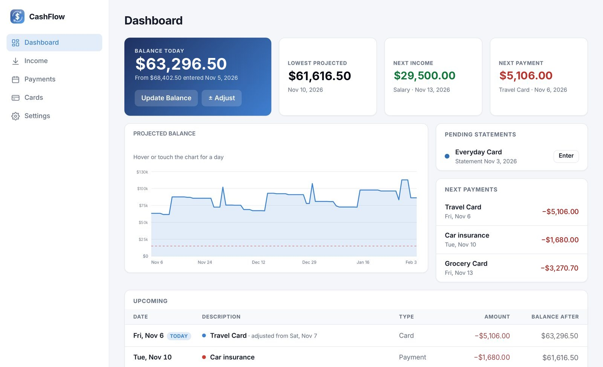
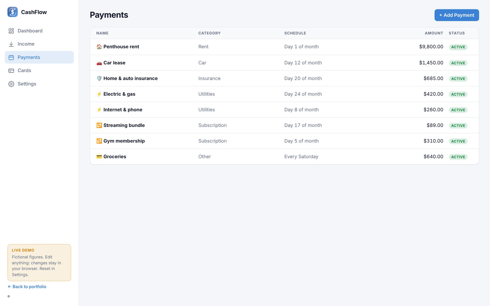
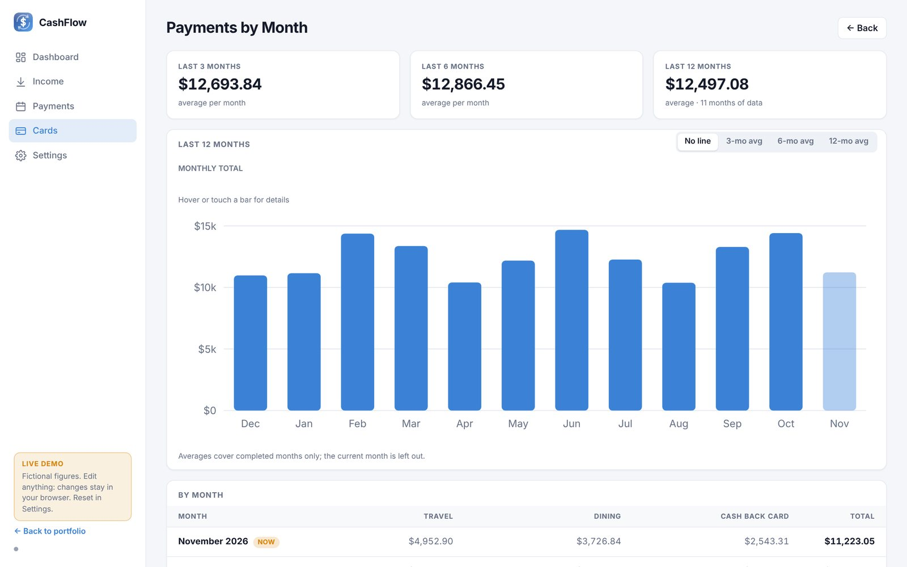
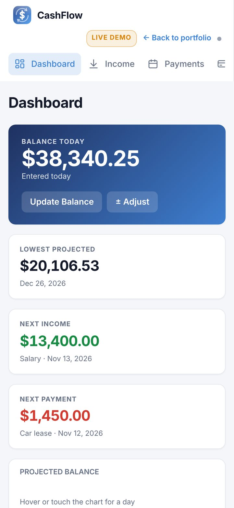

Cash Flow Tracker and Forecast
A private app that projects my checking balance day by day from card statements, income and recurring payments, and flags the lowest point weeks before it happens.
- Role
- Idea, design and build, with Claude as coding partner
- Platform
- Mac (web app) and iPhone (SwiftUI, Face ID lock)
- Data
- Local only; the public demo uses fictional figures
- Status
- In daily use; live demo available

01 · Problem
What need does it solve?
A bank balance only describes today. Card bills, rent, insurance and income all arrive on different schedules, and a card bill is not even known until its statement closes.
The real risk is a day a few weeks out when several payments land before payday and the balance drops lower than expected. I wanted to see that day in advance, not discover it.
02 · Solution
How it works
I enter today's balance and the schedules for income, recurring payments and cards once. From then on the app:
- Projects the balance for every day of the next 90 days (the horizon is adjustable)
- Highlights the lowest projected balance and its date, against a minimum-balance threshold
- Uses the real statement amount when it exists, and an estimate marked EST until then
- Reports card payments by month with 3-, 6- and 12-month averages






03 · Architecture
How the system fits together
Four kinds of input feed a single forecast engine. The engine expands every schedule into dated events, moves them off weekends and holidays, estimates card bills that are not known yet, and walks the balance forward one day at a time. The private version saves to a local file through a Python server that only listens on the computer itself and backs up to a repository it has confirmed is private. The iPhone app applies the same rules, so both show the same forecast.
04 · Technology
What it is built with
| Interface | Plain JavaScript modules; no framework and no build step |
|---|---|
| Charts | Hand-built SVG charts with hover and touch details |
| Engine | engine.js: recurrence rules, business-day and holiday adjustment, card bill estimation, projection |
| Storage | Local file through a Python server bound to 127.0.0.1; backups to a private repository |
| iPhone | SwiftUI app with the same rules and a Face ID lock |
| Public demo | Same engine and screens, browser storage, fictional data with dates relative to today |
05 · Challenges
Hard parts and how they were solved
Calendars are messy
A payment due on a Saturday or on the Fourth of July does not leave the account that day. Each schedule says whether it moves to the previous or the next business day, the engine computes US federal holidays including observed dates, and income can be set to arrive a few business days early.
Which statement pays which bill
A statement closes in one month and is usually paid the next, unless the due day falls later in the same month. The engine maps every due date to the statement period it pays, so an estimate and an actual statement are never counted twice.
Bills that cannot be known yet
Until a statement closes, the bill is estimated from the card's 12- or 3-month average (or an expected amount) and labeled EST. The estimate is replaced as soon as the real statement is entered.
One set of rules, two apps
The JavaScript engine follows the same rules as the iPhone app, so the Mac and the phone always show the same numbers.
06 · Results
What came out of it
- The lowest point of the coming months is visible weeks ahead, with its date, leaving time to move money before the balance dips under the threshold.
- Card spending is tracked month by month, with averages that make unusual months stand out.
- Runs privately on Mac and iPhone; the public demo shows the same engine with fictional data.